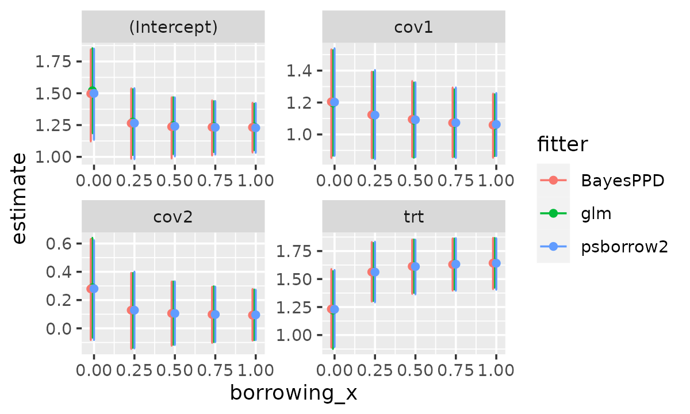

7. Comparison of Fixed Weights
Matt Secrest and Isaac Gravestock
weighting.RmdIntroduction
In a psborrow2 analysis it is possible to specify fixed
weights for an observation’s log-likelihood contribution. This is
similar to a weighted regression or a fixed power prior parameter.
This vignette will show how weights can be specified and compare
regression model results with other packages. We will compare a
glm model with weights, a weighted likelihood in Stan with
psborrow2, and BayesPPD::glm.fixed.a0 for
generalized linear models with fixed a0 (power prior
parameter).
Logistic regression
We fit logistic regression models with the external control arm
having weights (or power parameters) equal to 0, 0.25, 0.5, 0.75, 1. The
internal treated and control patients have weight = 1. The model has a
treatment indicator and two covariates,
resp ~ trt + cov1 + cov2.
Results
logistic_res_df <- do.call(
rbind,
c(logistic_glm_reslist, logistic_ppd_reslist, logistic_psb_reslist)
)
logistic_res_df$est_ci <- sprintf(
"%.3f (%.3f, %.3f)",
logistic_res_df$estimate, logistic_res_df$lower, logistic_res_df$upper
)
wide <- reshape(
logistic_res_df[, c("fitter", "borrowing", "variable", "est_ci")],
direction = "wide",
timevar = "fitter",
idvar = c("borrowing", "variable"),
)
new_order <- order(wide$variable, wide$borrowing)
knitr::kable(wide[new_order, ], digits = 3, row.names = FALSE)| borrowing | variable | est_ci.glm | est_ci.BayesPPD | est_ci.psborrow2 |
|---|---|---|---|---|
| 0.00 | (Intercept) | 0.646 (-0.038, 1.357) | 0.666 (-0.034, 1.393) | 0.661 (-0.030, 1.377) |
| 0.25 | (Intercept) | 0.394 (-0.131, 0.931) | 0.398 (-0.134, 0.941) | 0.403 (-0.128, 0.935) |
| 0.50 | (Intercept) | 0.293 (-0.158, 0.751) | 0.295 (-0.163, 0.772) | 0.294 (-0.162, 0.759) |
| 0.75 | (Intercept) | 0.235 (-0.168, 0.642) | 0.237 (-0.171, 0.662) | 0.236 (-0.173, 0.644) |
| 1.00 | (Intercept) | 0.196 (-0.172, 0.567) | 0.198 (-0.173, 0.565) | 0.195 (-0.164, 0.567) |
| 0.00 | cov1 | -0.771 (-1.465, -0.095) | -0.793 (-1.493, -0.105) | -0.788 (-1.496, -0.106) |
| 0.25 | cov1 | -0.781 (-1.340, -0.231) | -0.790 (-1.342, -0.236) | -0.801 (-1.349, -0.254) |
| 0.50 | cov1 | -0.769 (-1.252, -0.291) | -0.779 (-1.277, -0.291) | -0.775 (-1.265, -0.298) |
| 0.75 | cov1 | -0.758 (-1.191, -0.329) | -0.763 (-1.223, -0.327) | -0.764 (-1.197, -0.324) |
| 1.00 | cov1 | -0.749 (-1.145, -0.357) | -0.755 (-1.143, -0.362) | -0.754 (-1.149, -0.357) |
| 0.00 | cov2 | -0.730 (-1.472, -0.008) | -0.757 (-1.502, -0.010) | -0.758 (-1.493, -0.021) |
| 0.25 | cov2 | -0.559 (-1.114, -0.014) | -0.565 (-1.117, -0.008) | -0.566 (-1.120, -0.025) |
| 0.50 | cov2 | -0.459 (-0.926, 0.003) | -0.460 (-0.940, 0.010) | -0.466 (-0.937, -0.006) |
| 0.75 | cov2 | -0.398 (-0.811, 0.011) | -0.405 (-0.813, 0.009) | -0.403 (-0.814, 0.012) |
| 1.00 | cov2 | -0.358 (-0.731, 0.013) | -0.361 (-0.730, 0.007) | -0.358 (-0.731, 0.013) |
| 0.00 | trt | 0.154 (-0.558, 0.871) | 0.157 (-0.580, 0.907) | 0.160 (-0.556, 0.882) |
| 0.25 | trt | 0.349 (-0.183, 0.885) | 0.353 (-0.191, 0.882) | 0.356 (-0.181, 0.880) |
| 0.50 | trt | 0.405 (-0.082, 0.894) | 0.412 (-0.076, 0.890) | 0.414 (-0.072, 0.908) |
| 0.75 | trt | 0.434 (-0.031, 0.900) | 0.441 (-0.019, 0.916) | 0.441 (-0.032, 0.913) |
| 1.00 | trt | 0.452 (-0.000, 0.905) | 0.459 (-0.007, 0.914) | 0.457 (0.009, 0.907) |
logistic_res_df$borrowing_x <- logistic_res_df$borrowing +
(as.numeric(factor(logistic_res_df$fitter)) - 3) / 100
ggplot(logistic_res_df, aes(x = borrowing_x, y = estimate, group = fitter, colour = fitter)) +
geom_errorbar(aes(ymin = lower, ymax = upper)) +
geom_point() +
facet_wrap(~variable, scales = "free")
Exponential models
Now we fit models with an exponentially distributed outcome. There is
no censoring in this data set. For glm we use
family = Gamma(link = "log") and specify fixed
dispersion = 1 to fit a exponential model. As before, the
external control arm having weights (or power parameters) equal to 0,
0.25, 0.5, 0.75, 1. The internal treated and control patients have
weight = 1. The model has a treatment indicator and two covariates,
eventtime ~ trt + cov1 + cov2.
head(sim_data_exp)
# id eventtime status trt cov1 cov2 ext censor
# 1 1 0.01415794 1 0 0 1 0 0
# 2 2 0.11068091 1 0 1 0 0 0
# 3 3 0.01450650 1 0 1 0 0 0
# 4 4 0.03359306 1 0 1 0 0 0
# 5 5 0.53122173 1 0 0 0 0 0
# 6 6 0.09281095 1 0 1 0 0 0Results
Note: Wald confidence intervals are displayed here for
glm for the exponential models.
res_df <- do.call(rbind, c(glm_reslist, ppd_reslist, psb_reslist))
res_df$est_ci <- sprintf(
"%.3f (%.3f, %.3f)",
res_df$estimate, res_df$lower, res_df$upper
)
wide <- reshape(
res_df[, c("fitter", "borrowing", "variable", "est_ci")],
direction = "wide",
timevar = "fitter",
idvar = c("borrowing", "variable"),
)
new_order <- order(wide$variable, wide$borrowing)
knitr::kable(wide[new_order, ], digits = 3, row.names = FALSE)| borrowing | variable | est_ci.glm | est_ci.BayesPPD | est_ci.psborrow2 |
|---|---|---|---|---|
| 0.00 | (Intercept) | 1.495 (1.162, 1.829) | 1.481 (1.125, 1.812) | 1.475 (1.130, 1.794) |
| 0.25 | (Intercept) | 1.241 (0.983, 1.498) | 1.236 (0.973, 1.499) | 1.235 (0.962, 1.503) |
| 0.50 | (Intercept) | 1.189 (0.967, 1.411) | 1.181 (0.945, 1.406) | 1.182 (0.961, 1.402) |
| 0.75 | (Intercept) | 1.165 (0.966, 1.364) | 1.157 (0.957, 1.357) | 1.160 (0.955, 1.361) |
| 1.00 | (Intercept) | 1.151 (0.969, 1.333) | 1.146 (0.959, 1.325) | 1.147 (0.964, 1.323) |
| 0.00 | cov1 | 1.173 (0.844, 1.503) | 1.176 (0.849, 1.503) | 1.180 (0.856, 1.507) |
| 0.25 | cov1 | 1.111 (0.842, 1.380) | 1.111 (0.844, 1.376) | 1.112 (0.835, 1.387) |
| 0.50 | cov1 | 1.111 (0.877, 1.345) | 1.114 (0.885, 1.358) | 1.114 (0.885, 1.344) |
| 0.75 | cov1 | 1.113 (0.902, 1.323) | 1.118 (0.908, 1.326) | 1.114 (0.903, 1.329) |
| 1.00 | cov1 | 1.114 (0.922, 1.307) | 1.116 (0.931, 1.306) | 1.117 (0.924, 1.309) |
| 0.00 | cov2 | 0.395 (0.043, 0.747) | 0.387 (0.026, 0.738) | 0.392 (0.027, 0.741) |
| 0.25 | cov2 | 0.199 (-0.065, 0.463) | 0.198 (-0.069, 0.457) | 0.197 (-0.073, 0.464) |
| 0.50 | cov2 | 0.185 (-0.038, 0.407) | 0.184 (-0.042, 0.406) | 0.184 (-0.037, 0.403) |
| 0.75 | cov2 | 0.181 (-0.015, 0.378) | 0.181 (-0.015, 0.375) | 0.181 (-0.015, 0.371) |
| 1.00 | cov2 | 0.180 (0.002, 0.358) | 0.181 (0.003, 0.360) | 0.179 (0.000, 0.354) |
| 0.00 | trt | 1.210 (0.864, 1.555) | 1.214 (0.866, 1.561) | 1.215 (0.865, 1.572) |
| 0.25 | trt | 1.576 (1.319, 1.834) | 1.572 (1.312, 1.827) | 1.573 (1.314, 1.828) |
| 0.50 | trt | 1.633 (1.397, 1.870) | 1.633 (1.388, 1.869) | 1.630 (1.393, 1.864) |
| 0.75 | trt | 1.658 (1.431, 1.884) | 1.655 (1.424, 1.885) | 1.655 (1.428, 1.882) |
| 1.00 | trt | 1.671 (1.451, 1.891) | 1.668 (1.448, 1.887) | 1.668 (1.443, 1.887) |
res_df$borrowing_x <- res_df$borrowing +
(as.numeric(factor(res_df$fitter)) - 3) / 100
ggplot(res_df, aes(x = borrowing_x, y = estimate, group = fitter, colour = fitter)) +
geom_errorbar(aes(ymin = lower, ymax = upper)) +
geom_point() +
facet_wrap(~variable, scales = "free")